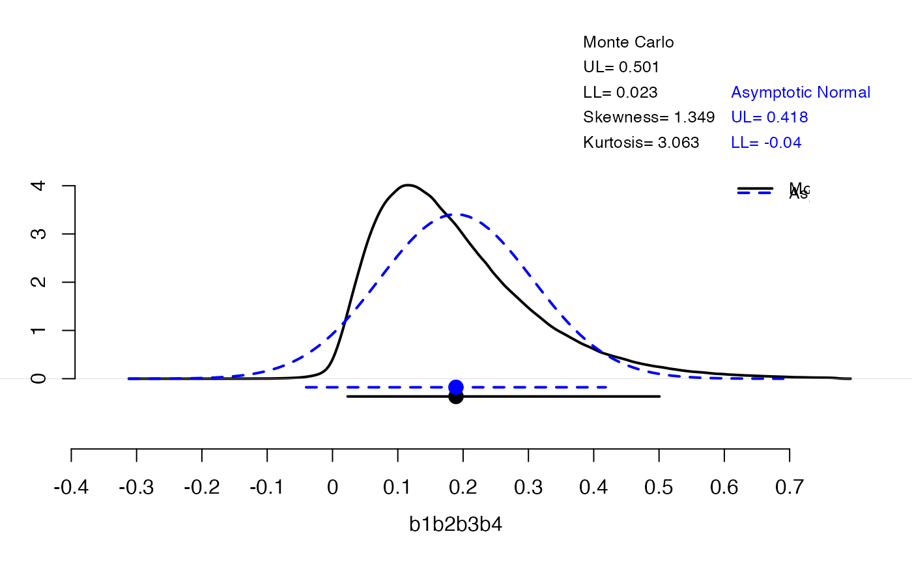
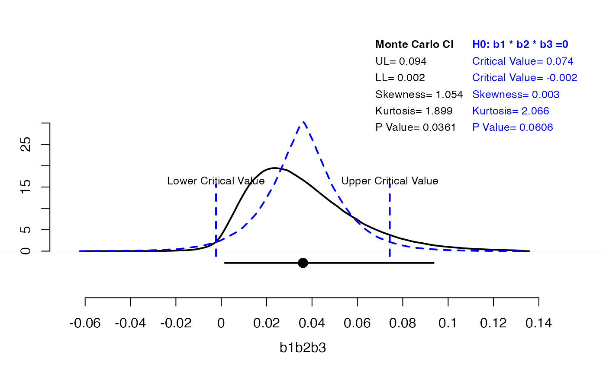

This function returns a (\(1-\alpha\))% confidence interval (CI) for a
well–defined nonlinear function of the coefficients in single–level and
multilevel structural equation models. The ci function uses the Monte
Carlo (type="MC") and the asymptotic normal theory
(type="asymp") with the multivariate delta standard error
(Asymptotic–Delta) method (Sobel, 1982) to compute a CI. In addition, for
each of the methods, when a user specifies plot=TRUE and
plotCI=TRUE, a plot of the sampling distribution of the quantity of
interest in the quant argument and an overlaid plot of the CI will be
produced. When type="all" and plot=TRUE, two overlaid plots of
the sampling distributions corresponding to each method will be produced;
when plotCI=TRUE, then the overlaid plots of the CIs for both methods
will be displayed as well.
Usage
ci(
mu,
Sigma,
quant,
alpha = 0.05,
type = "MC",
plot = FALSE,
plotCI = FALSE,
n.mc = 1e+06,
H0 = FALSE,
mu0 = NULL,
Sigma0 = NULL,
...
)Arguments
- mu
(1) a vector of means (e.g., coefficient estimates) for the normal random variables. A user can assign a name to each mean value, e.g.,
mu=c(b1=.1,b2=3); otherwise, the coefficient names are assigned automatically as follows:b1,b2,.... Or, (2) a lavaan object.- Sigma
either a covariance matrix or a vector that stacks all the columns of the lower triangle variance–covariance matrix one underneath the other.
- quant
quantity of interest, which is a nonlinear/linear function of the model parameters. Argument
quantis a formula that must start with the symbol "tilde" (~): e.g.,~b1*b2*b3*b4. The names of coefficients must conform to the names provided in the argumentmuor to the default names, i.e.,b1,b2,....- alpha
significance level for the CI. The default value is .05.
- type
method used to compute a CI. It takes on the values
"MC"(default) for Monte Carlo,"asymp"for Asymptotic–Delta, or"all"that produces CIs using both methods.- plot
when
TRUE, plot the approximate sampling distribution of the quantity of interest using the specified method(s) in the argumenttype. The default value isFALSE. Whentype="all", superimposed density plots generated by both methods are displayed.- plotCI
when
TRUE, overlays a CI plot with error bars on the density plot of the sampling distribution ofquant. Whentype="all", the superimposed CI plots generated by both methods are added to the density plots. Note that to obtain a CI plot, one must also specifyplot="TRUE". The default value isFALSE.- n.mc
Monte Carlo sample size. The default sample size is 1e+6.
- H0
False. If
TRUE, it will estimate the sampling distribution of \(H_{0}:f(\bm b)=0\). See the argumentsmu0andSigma0.- mu0
a vector of means (e.g., coefficient estimates) for the normal random variables that satisfy the null hypothesis \(H_{0}:f(\bm b)=0\). If it is not provided, smallest z value of
muis zet to zero.- Sigma0
either a covariance matrix or a vector that stacks all the columns of the lower triangle variance–covariance matrix one underneath the other. If it is not provided, then
Sigmais used instead.- ...
additional arguments.
Value
When type is "MC" or "asymp", ci returns
a list that contains:
- (\(1-\alpha\))% CI
a vector of lower and upper confidence limits,
- Estimate
a point estimate of the quantity of interest,
- SE
standard error of the quantity of interest,
- MC Error
When
type="MC", error of the Monte Carlo estimate.
When type="all", ci returns a list of two
objects, each of which a list that contains the results produced by
each method as described above.
References
Tofighi, D. and MacKinnon, D. P. (2011). RMediation: An R package for mediation analysis confidence intervals. Behavior Research Methods, 43, 692–700. doi:10.3758/s13428-011-0076-x
Author
Davood Tofighi dtofighi@gmail.com
Examples
ci(
mu = c(b1 = 1, b2 = .7, b3 = .6, b4 = .45),
Sigma = c(.05, 0, 0, 0, .05, 0, 0, .03, 0, .03),
quant = ~ b1 * b2 * b3 * b4, type = "all", plot = TRUE, plotCI = TRUE
)

#> $MC
#> $MC[[1]]
#> 2.5 % 97.5 %
#> 0.02312248 0.50064170
#>
#> $MC$Estimate
#> [1] 0.1890947
#>
#> $MC$SE
#> [1] 0.1252815
#>
#> $MC$MCError
#> [1] 1.252815e-07
#>
#> $MC$p
#> [1] 0.011638
#>
#> attr(,"quant")
#> ~b1 * b2 * b3 * b4
#> <environment: 0x9903aa430>
#>
#> $Asymptotic
#> $Asymptotic$`97.5% CI`
#> [1] -0.04040623 0.41840623
#>
#> $Asymptotic$Estimate
#> [1] 0.189
#>
#> $Asymptotic$SE
#> [,1]
#> [1,] 0.1170461
#>
#> attr(,"quant")
#> ~b1 * b2 * b3 * b4
#> <environment: 0x9903aa430>
#>
# An Example of Conservative Null Sampling Distribution
ci(c(b1 = .3, b2 = .4, b3 = .3), c(.01, 0, 0, .01, 0, .02),
quant = ~ b1 * b2 * b3, type = "mc", plot = TRUE, plotCI = TRUE,
H0 = TRUE, mu0 = c(b1 = .3, b2 = .4, b3 = 0)
)

#> [[1]]
#> [[1]][[1]]
#> 2.5 % 97.5 %
#> 0.00158318 0.09359723
#>
#> [[1]]$Estimate
#> [1] 0.03602848
#>
#> [[1]]$SE
#> [1] 0.02396279
#>
#> [[1]]$MCError
#> [1] 2.396279e-08
#>
#> [[1]]$p
#> [1] 0.036072
#>
#> attr(,"quant")
#> ~b1 * b2 * b3
#> <environment: 0x9903aa430>
#>
#> [[2]]
#> [[2]]$CI
#> 2.5 % 97.5 %
#> -0.00231408 0.07429322
#>
#> [[2]]$Estimate
#> [1] -1.082207e-05
#>
#> [[2]]$SE
#> [1] 0.0184502
#>
#> [[2]]$p
#> [1] 0.060574
#>
#> [[2]][[5]]
#> b1 b2 b3
#> 0.3 0.4 0.0
#>
#>
# An Example of Less Conservative Null Sampling Distribution
ci(c(b1 = .3, b2 = .4, b3 = .3), c(.01, 0, 0, .01, 0, .02),
quant = ~ b1 * b2 * b3, type = "mc", plot = TRUE, plotCI = TRUE,
H0 = TRUE, mu0 = c(b1 = 0, b2 = .4, b3 = 0.1)
)
 #> [[1]]
#> [[1]][[1]]
#> 2.5 % 97.5 %
#> 0.001513854 0.093562761
#>
#> [[1]]$Estimate
#> [1] 0.03599655
#>
#> [[1]]$SE
#> [1] 0.02394217
#>
#> [[1]]$MCError
#> [1] 2.394217e-08
#>
#> [[1]]$p
#> [1] 0.036404
#>
#> attr(,"quant")
#> ~b1 * b2 * b3
#> <environment: 0x9903aa430>
#>
#> [[2]]
#> [[2]]$CI
#> 2.5 % 97.5 %
#> 0.02047066 0.05149711
#>
#> [[2]]$Estimate
#> [1] 7.660872e-07
#>
#> [[2]]$SE
#> [1] 0.007143127
#>
#> [[2]]$p
#> [1] 0.0025
#>
#> [[2]][[5]]
#> b1 b2 b3
#> 0.0 0.4 0.1
#>
#>
#> [[1]]
#> [[1]][[1]]
#> 2.5 % 97.5 %
#> 0.001513854 0.093562761
#>
#> [[1]]$Estimate
#> [1] 0.03599655
#>
#> [[1]]$SE
#> [1] 0.02394217
#>
#> [[1]]$MCError
#> [1] 2.394217e-08
#>
#> [[1]]$p
#> [1] 0.036404
#>
#> attr(,"quant")
#> ~b1 * b2 * b3
#> <environment: 0x9903aa430>
#>
#> [[2]]
#> [[2]]$CI
#> 2.5 % 97.5 %
#> 0.02047066 0.05149711
#>
#> [[2]]$Estimate
#> [1] 7.660872e-07
#>
#> [[2]]$SE
#> [1] 0.007143127
#>
#> [[2]]$p
#> [1] 0.0025
#>
#> [[2]][[5]]
#> b1 b2 b3
#> 0.0 0.4 0.1
#>
#>